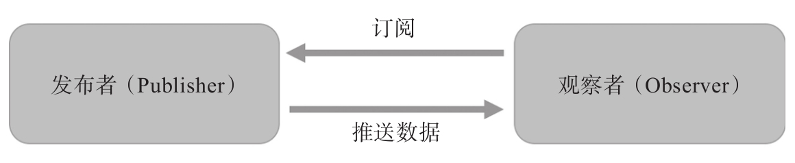

观察者模式要解决的问题，就是在一个持续产生事件的系统中，如何分割功能，让不同模块只需要处理一部分逻辑，这种分而治之的思想是基本的系统设计概念，当然，“分”很容易，关键是如何“治”。
观察者模式对“治”这个问题提的解决方法是这样，将逻辑分为发布者（Publisher）和观察者（Observer），其中发布者只管负责产生事件，它会通知所有注册挂上号的观察者，而不关心这些观察者如何处理这些事件，相对的，观察者可以被注册上某个发布者，只管接收到事件之后就处理，而不关心这些数据是如何产生的。
注意
在很多介绍观察者模式的文献中，产生事件的叫做“主体”（Subject），但是，很不巧在RxJS中Subject这个词有另外一个含义，在第10章中会介绍，在本书中用“发布者”（Publisher）这个词称呼产生事件的元素。
在RxJS的世界中，Observable对象就是一个发布者，通过Observable对象的subscribe函数，可以把这个发布者和某个观察者（Observer）连接起来。

图2-1 发布者和观察者的关系
在下面的代码中，source$就是一个Observable对象，作为发布者，它产生的“事件”就是连续的三个整数：1、2、3：
import {Observable} from 'rxjs/Observable';
import 'rxjs/add/observable/of';
const source$ = Observable.of(1, 2, 3);
source$.subscribe(console.log);
扮演观察者的是console.log函数，不管传入什么“事件”，它只管把“事件”输出到console上，最终的运行结果，就是在console上输出三行，分别是1、2、3。
观察者模式带来的好处很明显，这个模式中的两方都可以专心做一件事，而且可以任意组合，也就是说，复杂的问题被分解成三个小问题：
·如何产生事件，这是发布者的责任，在RxJS中是Observable对象的工作。
·如何响应事件，这是观察者的责任，在RxJS中由subscribe的参数来决定。
·什么样的发布者关联什么样的观察者，也就是何时调用subscribe。